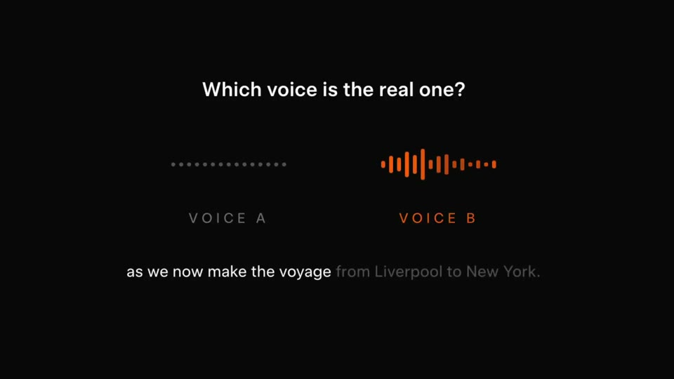
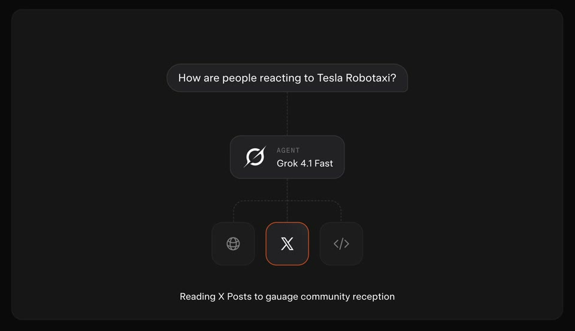
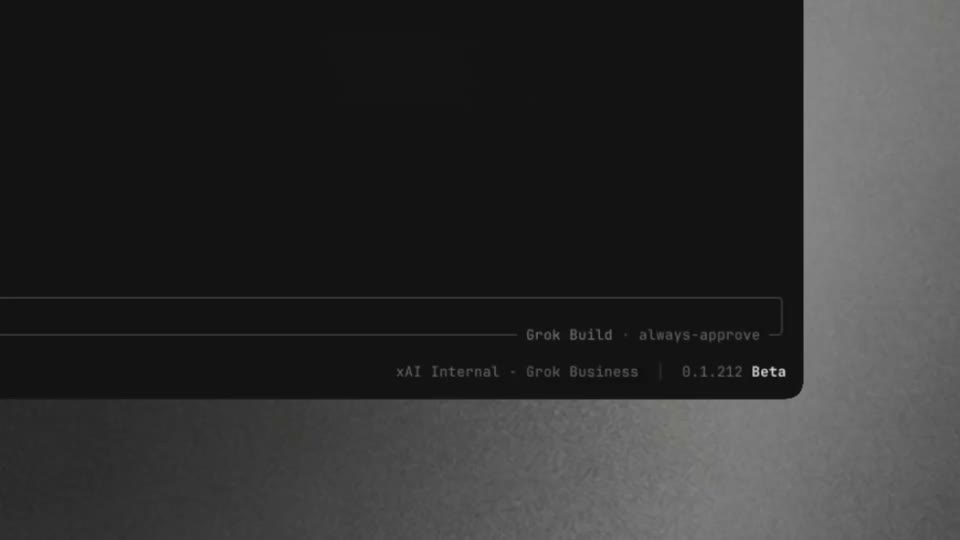
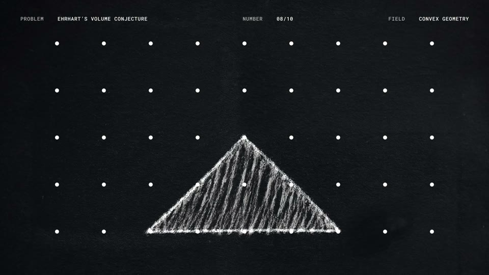

The dark instrument
A black stage where the product reads like an instrument: idle dots turn into live bars, grey words snap to white, there is one accent colour, and the product’s own sound is the soundtrack.






The rules
Near-black ground (#080808), one accent (orange #EB5811), rebuilt dark cards (#161616 with 1 px #2A2A2A borders).
Everything sits in the middle half; spaced-caps labels; one centred line at a time.
Idle = a grey dotted line. Live = accent bars or a karaoke caption.
No music: silence gates every event, and the picture only moves while the product makes sound.
Variant: a grain gradient world with letter-by-letter blur resolves and a steady tick pulse.
For Kallo
A night version of logging: three macro slots sit idle as dotted lines and each goes live as the sentence is parsed, while the meal line snaps from grey to ink. Every sound is caused by the product.
Precise, credible, and reads perfectly on mute; strong for a “how it works” cut.
Cold for food, and Kallo’s palette is warm. Better as a chapter or a cut-down than the whole film.
Films
SpaceXAI · Voice cloning API · 204M views
SpaceXAI · Voice cloning quiz · 119M views
SpaceXAI · Grok Build · 73M views
SpaceXAI · Polymarket · 5M views
OpenAI · Computer History · 4M views
SpaceXAI · Kalshi · 4M views
SpaceXAI · Agent Tools API · 3M views
OpenAI · Mathematical Advances · 2M views
SpaceXAI · Text to Speech API · 939K views